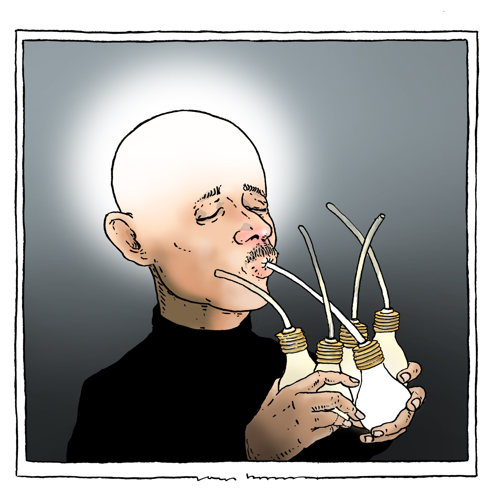

Minder raden.
Meer weten.
Het is tijd dat je eens praat met je publiek, via een Signaalgesprek. Ontdek wat er speelt en welke uitdagingen mensen hebben. Gebruik die inzichten om betere verhalen te schrijven, scherpere redactionele keuzes te maken en meer draagvlak te creëren voor je journalistiek. En dat in één sessie van 2 tot 3 uur.
Doe de test!
“Ik kan hier wel vijf, zes onderwerpen uithalen die ik anders
nooit had ontdekt.”
- Jana Flekken, Alkmaarsche Courant
Wat is dit?
Een Signaalgesprek is een bijeenkomst van 2 tot 3 uur met een groep mensen die actief zijn in een specifiek domein. De redactie kiest het thema, de deelnemers bepalen wat er besproken wordt.
Tijdens het gesprek luister je naar wat er speelt: welke zorgen, ideeën en uitdagingen hebben mensen? Je ontdekt ook mogelijke blinde vlekken in je verslaggeving. Vervolgens kijk je samen hoe je deze inzichten kan gebruiken voor nieuwe verhalen, samenwerkingen of vervolgonderzoek.
Vanwaar dit idee?
De band tussen journalist en publiek is vaak óf bron, óf lezer. Jammer, want zo missen we frisse perspectieven en nieuwe stemmen. Het publiek weet veel, maar we luisteren te weinig. Het is tijd dat we mensen mee laten denken en zo ook het vertrouwen in de journalistiek versterken.
“In een paar uur kreeg ik dankzij de discussie
veel nieuwe inzichten. Dat lukt nooit als je
mensen apart spreekt. En mijn netwerk is in die paar uur flink
gegroeid.”
- Debbie de Vries, Dagblad Waterland
Een Signaalgesprek is handig als je:
- Meer wilt schrijven over een thema, maar nog niet goed weet hoe of wat
- Merkt dat sommige groepen zich niet herkennen in jullie verhalen
- De band met je publiek wilt versterken
- Een onderwerp of thema (nog) beter wilt begrijpen
- Een doelgroep beter wilt leren kennen - en hen ook graag een handje helpt

“Ik voel me meer verbonden met de krant, journalisten zijn nu
minder eng.”
- Deelnemer
Waarom?
Een Signaalgesprek levert heel wat op:
- 2 tot 5 nieuwe verhaalideeën
- Waardevolle informatie uit de eerste hand
- Ideeën voor nieuwe rubrieken en formats
- Input om je redactionele koers aan te scherpen
- Een sterkere band met je publiek
- Meer begrip en steun voor je journalistiek
“Waanzinnig dat een gesprek van maar twee uur zoveel kan opleveren
waarvan ik echt geen idee had.”
- Jana Flekken, Alkmaarsche
Courant
Hoe werkt het?
Ronde 1: kennismaking + uitdagingen delen
Iedereen stelt zich kort voor en deelt één tot drie uitdagingen.
Korte pauze
Ronde 2: brainstorm
Samen bedenk je ideeën rond deze uitdagingen. Een fijne werkvorm hiervoor is 'brainwriting': iedereen schrijft ideeën op papier, geeft het vel door en vult aan op elkaars input.
Korte pauze
Ronde 3: hoe nu verder?
Je bespreekt de volgende stappen. Bijvoorbeeld:
- Heeft de redactie nieuwe verhaalideeën?
- Kan een deelnemer een oproep doen om iets verder te brengen?
- Zijn er kansen om samen te werken?
Afsluiten
Een Signaalgesprek duurt doorgaans zo'n 3 uur, afhankelijk van je groep. Zorg altijd voor lunch of snacks: dat doet wonderen voor de sfeer.
“Tijdens het gesprek konden we goed uitleggen waarom bepaalde
beslissingen zijn genomen. Er werd open gesproken over wat niet
goed ging.”
- Debbie de Vries, Dagblad Waterland
Wil je zelf aan de slag?
Hier vind je alle documenten om een Signaalgesprek te organiseren op jouw redactie.
Heb je nog vragen? Of wil je gratis begeleiding? Mail dan naar: josjekerkhoven@svdjincubator.nl
Wie zit erachter?
Het Signaalgesprek komt voort uit experimenteel innovatief onderzoek bij het Incubatorprogramma van het Stimuleringsfonds voor de Journalistiek.
Hieronder zie je wie eraan meewerkt:
Teamsupport:
Hoe goed ken jij je publiek écht?
Vragen? Of wil je samenwerken?
Bel of app Josje Kerkhoven: 06-44130324. Mailen kan ook: signaalgesprek@gmail.com
“De krant en journalistiek voelden dichterbij dan ooit.”
-
Deelnemer
Veelgestelde vragen
Komt hier